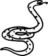

Şimdi en güzel demleri Asmalımescit'in. Balık mönüleri yenilenecek elbet, pişirme tarzları hep aynı kalsa da. Çok değil birkaç hafta sonra aynı şekilde dışarılara masa kurulamayacağını bildiklerinden, garsonlar müşterilere karşı daha az tahammülsüz, müşteriler garsonlara karşı bir parça daha tahammüllü olacak. Senede tam üç kez deri değiştiren dişi bir yılan bu şehir. Yazın giydiği o pul pul altın sarısı, ışıltılı deri tamamen düştüğünde, durgunluğuna yeniden kavuşabilecek alttan çıkan morumtırak rengi, katmerli deseniyle. O zaman, sıcaklarda soğudukları evlerini yeniden sevmeye başlayacak şehrin sakinleri. Güneş eridikçe, onlar da Boğaz kıyılarına yığılıp, hep aynı "kara-zeytin-beyaz-peynir-sade-poğaça-sahanda-yumurta" mönülerini, hep aynı gazete sohbetleriyle tatlandırarak, her biri bir öncekinin tıpatıp aynı olan, uzadıkça uzayan pazar kahvaltıları yapmaktan da usul usul vazgeçecekler. Kitapçılar bereketlenecek, sinemalar hareketlenecek; gene kötü kötü filmler gelecek şehre ama aralarında iyileri de olacak. Gene kimse kıymetini bilmeyecek İstanbul'un. Ve o gene kıymetini bilmeyecek kimsenin. Belalı bir med-cezir bu şehir. Uzağındayken onu düşünmeden yapamadığım, içindeyken kendimi ondan uzaklaştırdığım örselenmiş bir aşk gibi daimi bir çekişme, didinme, mücadele. Çetrefil bir ay eylül çünkü tam da suların çekilme zamanı. Mevsimlerin en kepazesi olan yaz boyunca her tarafı saran, vıcık vıcık insanın üzerinde eriyip kalan o yapışkan rehavetin, alışkanlıklar üzerine kurulu amaçsızlığın, tutkusuzluğun, kanıksamışlığın azar azar da olsa nihayet çekilmeye başladığı ay. Sular azaldığında, yaz boyu hep ayaklarımızın altında olan ama neredeyse hiç hissetmediğimiz, hissetsek dahi değmemeye özen gösterdiğimiz taşlarla, kayalarla, kendi dipsiz yalnızlığımızla göz göze geleceğiz eylül ayında. Neyse ki işe dönme mecburiyeti var çoğumuzun. Yapacak bir yığın anlamsız iş, ayak uyduracak bir düzen, illaki zamanında yetişilecek yerler, üzülecek kıytırık hadiseler var önümüzde. Meşgulüz neyse ki. Yoksa nasıl kaldırabilirdik eylülle gelen iç muhasebesini.
Eylülde ayrılıyorum İstanbul'dan. Oysa en güzel demleri Asmalımescit'in. Ama işte, 1920 sonbaharında, bir yük gemisinin güvertesinde bu şehre gelen sevgili Agripina Fyodorovna Antipova'nın bana öğrettiği gibi, "İstanbul'a ya bir şeylerden kaçılarak varılır ya da gün gelir ondan kaçılır."
Ve sonra, dayanamaz insan İstanbulsuzluğa. Döner gene, sular yükseldiğinde...
İstanbul